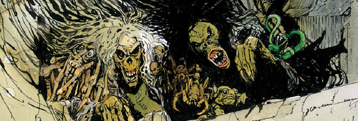

When Judge Death was captured inside Anderson's mind, he was subsequently freed by the arrival of his Dark Judge brethren: Fear, Fire & Mortis. When all four of them were banished to the inter-dimensional void, who was going to free them? In fact, who was responsible for their creation in the first place? Enter the Sisters of Death (Phobia & Nausea), a pair of otherwordly creatures with strong psi-powers, who use a glamour to sometimes appear human and seduce those who become their unwitting tools.
Not included in this listing, the historical Deadworld saga strongly features the Sisters during the Fall and Visions segments, and introduces a third sister who is attempting to stop them enacting their plan to feast on the life force of the entire planet.
Another set of Sisters are named (Pustula, Ephemera & Dementia) in the Anderson story Lucid, but there's every indication that these are manifestations of a psi-virus rather than canonic entities.
Art by Arthur Ranson
| Story Title | Parts | Pages | w indicates a wraparound coverCovers | Year(s) | Issues | Writer | Artist | Colourist | Letterer |
|---|---|---|---|---|---|---|---|---|---|
From The Dead ManThe Dead Man | 13 | 80 | 652: John Ridgway 656: John Ridgway 661: John Ridgway 3 | 1989-1990 | 650-662 | John Wagner | John Ridgway | [b&w] | Jack Potter |
From Judge DreddTale of the Dead Man | 7 | 54 | 662: Steve Cook 668: Jeff Anderson 2 | 1990 | 662-668 | John Wagner | Will Simpson: 1‑4 Jeff Anderson: 5‑7 various | <-- | Tom Frame |
From Judge Dredd | Countdown to NecropolisDear Annie | 2 | 13 | 673: Carlos Ezquerra 1 | 1990 | Reprints: M3.20672-673 | John Wagner | Carlos Ezquerra | <-- | Tom Frame |
From Judge DreddNecropolis | 26 | 174 | 674: Carlos Ezquerra 685: Carlos Ezquerra 690: David Hine 691: Mick Austin 693: Mike Hadley 696: Steve Yeowell 699: Dermot Power 7 | 1990 | Reprints: M3.21‑M3.35674-699 | John Wagner | Carlos Ezquerra | <-- | Tom Frame |
From Young DeathThe Boyhood of a Superfiend | 12 | 79 | M1.03: Duncan Fegredo M1.12: Peter Doherty 2 | 1990-1991 | M1.01-1.12 | listed as Brian Skuter (a character in the story) John Wagner | Peter Doherty | <-- | Gordon Robson: 1‑6, 9 Ellie De Ville: 7‑8 Steve Potter: 10‑12 various |
From Anderson Psi Division Specifically features pre‑Judge Fire as "Fuego".Half-Life | 4 | 48 | 217: Arthur Ranson 1 | 2003-2004 | M214-M217 | Alan Grant Tony Lukevarious | Arthur Ranson | <-- | Annie Parkhouse |
From Anderson Psi DivisionLucid | 4 | 32 | 0 | 2005-2006 | M238-M241 | Alan Grant | Arthur Ranson | <-- | Annie Parkhouse |
From The Dark JudgesDeliverance | 10 | 100 | 425 [w]: Nick Percival 427 [w]: Nick Percival 430: Nick Percival 433: [w]: Nick Percival 3w,1 | 2020-2021 | M424-M433 | David Hine | Nick Percival | <-- | Annie Parkhouse |
| year | episodes | pages |
| 1987 | 0 | 0 |
| 1988 | 0 | 0 |
| 1989 | 10 | 59 |
| 1990 | 42 | 286 |
| 1991 | 8 | 55 |
| 1992 | 0 | 0 |
| 1993 | 0 | 0 |
| 1994 | 0 | 0 |
| 1995 | 0 | 0 |
| 1996 | 0 | 0 |
| 1997 | 0 | 0 |
| 1998 | 0 | 0 |
| 1999 | 0 | 0 |
| 2000 | 0 | 0 |
| 2001 | 0 | 0 |
| 2002 | 0 | 0 |
| 2003 | 1 | 12 |
| 2004 | 3 | 36 |
| 2005 | 3 | 24 |
| 2006 | 1 | 8 |
| 2007 | 0 | 0 |
| 2008 | 0 | 0 |
| 2009 | 0 | 0 |
| 2010 | 0 | 0 |
| 2011 | 0 | 0 |
| 2012 | 0 | 0 |
| 2013 | 0 | 0 |
| 2014 | 0 | 0 |
| 2015 | 0 | 0 |
| 2016 | 0 | 0 |
| 2017 | 0 | 0 |
| 2018 | 0 | 0 |
| 2019 | 0 | 0 |
| 2020 | 4 | 40 |
| 2021 | 6 | 60 |